NCERT Solutions for Class 8 Science Chapter 11 Force and Pressure
Topics and Sub Topics in Class 8 Science Chapter 11 Force and Pressure:
| Section Name | Topic Name |
| 11 | Force and Pressure |
| 11.1 | Force – A Push or a Pull |
| 11.2 | Forces are due to an Interaction |
| 11.3 | Exploring Forces |
| 11.4 | A Force can Change the State of Motion |
| 11.5 | Force can Change the Shape of an Object |
| 11.6 | Contact Forces Muscular Force |
| 11.7 | Non-contact Forces Magnetic Force |
| 11.8 | Pressure |
| 11.9 | Pressure Exerted by Liquids and Gases |
| 11.10 | Atmospheric Pressure |
Force and Pressure Class 8 Science NCERT Textbook Questions
Question 1.
Give two examples each of the situations in which you push or pull to change the state of motion of objects.
Answer:
(i) Push: We close drawer by pushing.
We move a wooden box by pushing.
(ii) Pull: We draw water from a well by pulling the rope.
A horse pulls a cart.
Question 2.
Give two examples of situations in which applied force causes a change in the shape of an object.
Answer:
When we apply force on a rubber band to stretch it and on clay to change its shape.
Question 3.
Fill in the blanks in the following statements.
(a) To draw water from a well we have to ______ at the rope.
(b) A charged body ______ an uncharged body towards it.
(c) To move a loaded trolley we have to ______ it.
(d) The north pole of a magnet _______ the north pole of another magnet.
Answer:
(a) pull
(b) attracts
(c) push
(d) repels
Question 4.
An archer stretches her bow while taking aim at the target. She then releases the arrow, which begins to move towards the target. Based on this information fill up the gaps in the following statements using the following terms:
muscular, contact, non-contact, gravity, friction, shape, attraction
(a) To stretch the bow, the archer applies a force that causes a change in its ______
(b) The force applied by the archer to stretch the bow is an example of ______ force.
(c) The type of force responsible for a change in the state of motion of the arrow is an example of a ______ force.
(d) While the arrow moves towards its target, the forces acting on it are due to _______ and that due to _____ of air.
Answer:
(a) shape
(b) muscular
(c) contact
(d) gravity, friction
Question 5.
In the following situations identify the agent exerting the force and the object on which it acts. State the effect of the force in each case.
(a) Squeezing a piece of lemon between the fingers to extract its juice.
(b) Taking out paste from a toothpaste tube.
(c) A load suspended from a spring while its other end is on a hook fixed to a wall.
(d) An athlete making a high jump to clear the bar at a certain height.
Answer:
(a) Agents are fingers, object is lemon, effect of force changes the shape of lemon.
(b) Agents are fingers of the person squeezing the tube, object is toothpaste tube and effect of the force can be observed as the paste coming out of the tube (change in shape).
(c) Agent is the load suspended, object is the spring and effort can be seen in the form of elongation of spring on suspension of load (change in shape).
(d) Agent is muscles of athlete, object is athlete himself and effect of the force changes the state of motion of the athlete.
Question 6.
A blacksmith hammers a hot piece of iron while making a tool. How does the force due to hammering affect the piece of iron?
Answer:
The force due to hammering causes the change in the shape of the iron and iron can be moulded in the shape of the required tool.
Question 7.
An inflated balloon was pressed against a wall after it has been rubbed with a piece of synthetic cloth. It was found that the balloon sticks to the wall. What force might be responsible for the attraction between the balloon and the wall?
Answer:
Electrostatic force.
Question 8.
Name the forces acting on a plastic bucket containing water held above ground level in your hand. Discuss why the forces acting on the bucket do not bring a change in its state of motion.
Answer:
Forces acting on bucket are as follows:
(i) Muscular force of arms acting upward.
(ii) Force of gravity acting downward.
Both the forces do not bring any change in the state of motion because both of them are acting in equal and opposite directions and thus they cancel each other’s effect.
Question 9.
A rocket has been fired upwards to launch a satellite in its orbit. Name the two forces acting on the rocket immediately after leaving the launching pad.
Answer:
The forces that act when a rocket leaves launching pad are as follows:
(i) Gravitational force of the earth (downward)
(ii) Frictional force of air (in opposite direction)
Question 10.
When we press the bulb of a dropper with its nozzle kept in water, air in the dropper is seen to escape in the form of bubbles. Once we release the pressure on the bulb, water gets filled in the dropper. The rise of water in the dropper is due to
(a) pressure of water
(b) gravity of the earth
(c) shape of rubber bulb
(d) atmospheric pressure
Answer:
(d) atmospheric pressure
Force and Pressure Class 8 Science NCERT Intext Activities Solved
Activity 1 (NCERT Textbook, Page 128)
Table 11.1 gives some examples of familiar situations involving the motion of objects. You can add more such situations or replace those given here. Try to identify action involved in each case as a push and/or a pull and record your observations. One example has been given to help you.
Identifying Actions as Push or Pull
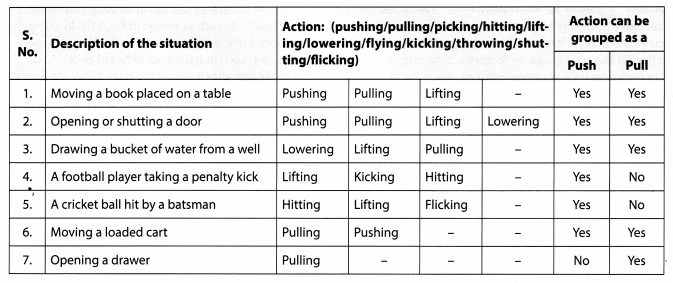
Activity 2 (NCERT Textbook, Page 130)
Choose a heavy object like a table or a box, which you can move only by pushing hard. Try to push it all by yourself. Can you move it? Now ask one of your friends to help you in pushing it in the same direction [Fig. 11.1(a)]. Is it easier to move it now? Can you explain why? Now push the same object, but ask your friend to push it from the op¬posite side [Fig. 11.1 (b)]. Does the object move? If it does, note the direction in which it moves. Can you guess which one of you is applying a larger force?
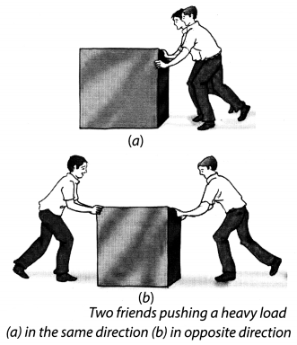
Solution:
(i) The box moves with difficulty when we push alone but moves easily if helped by our friend. Thus, force applied on an object in the same direction add to one another.
(ii) When the object is pushed from the opposite side, it does not move. Thus, if two forces acting in the opposite direction on an object the net force acting on it is the difference between the two forces.
Activity 3 (NCERT Textbook, Page 131)
Jake a rubber ball and place it on a level surface such as a tabletop or a concrete floor. Now, gently push the ball along the level surface (Fig. 11.2). Does the ball begin to move? Push the ball again while it is still moving. Is there any change in its speed? Does it increase or decrease?
Next, place your palm in front of the moving ball. Remove your palm as soon as the moving ball touches it. Does your palm apply a force on the ball? What happens to the speed of the ball now? Does it increase or decrease? What would happen if you let your palm hold the moving ball?
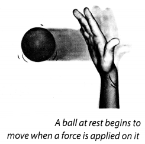
Solution:
When we push the ball along the level surface, the ball begin to move. When we push the ball again while it is still moving, increases its speed.
When we place our palm in front of the moving ball, decreases its speed. Hence, force can change the state of motion.
Activity 4 (NCERT Textbook, Page 132)
Take a ball and place it on a level surface as you did in Activity 11.3. Make the ball move by giving it a push. Now place the ruler from your geometry box in its path as shown in Fig. 11.3. In doing so, you would apply a force on the moving ball. Does the ball continue to move in the same direction after it strikes the ruler? Repeat the activity and try to obstruct the moving ball by placing the ruler such that it makes different angles to its path. In each case note your observations about the direction of motion of the ball after it strikes the ruler.
Solution:
Ball changes direction after it strikes the ruler. Thus, a force can change direction of motion of a moving object.
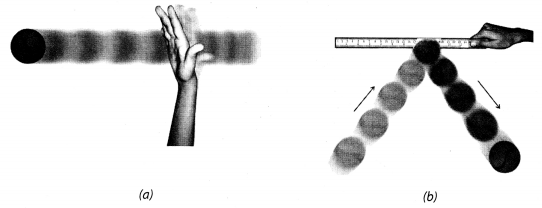
(a) A ball set in motion by pushing it along a level surface and
(b) the direction of motion of the ball after it strikes the ruler placed in its path
Activity 5 (NCERT Textbook, Page 133)
Some situations have been given in Column 1 of Table 11.2 in which objects are not free to move. Column 2 of the Table suggests the manner in which a force can be applied to each object while Column 3 shows a diagram of the action. Try to observe the effect of the force in as many situations as possible. You can also add similar situations using available material from your environment. Note your observations in Columns 4 and 5 of the table.
Studying the Effect of Force on Objects
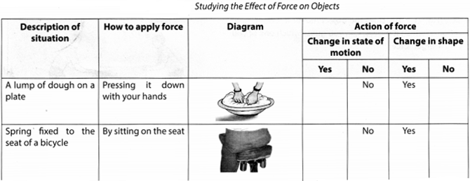
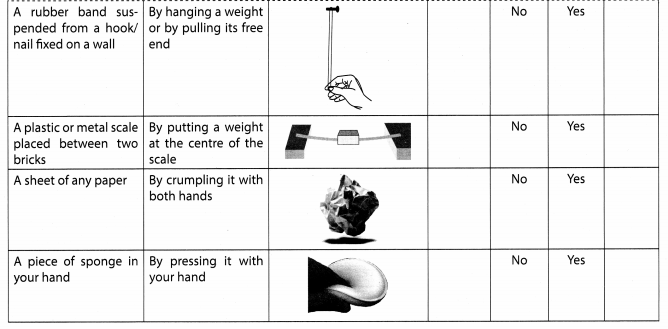
Solution:
From the above actions, we can conclude that force can change the shape of an object.
Activity 6 (NCERT Textbook, Page 135)
Take a pair of bar magnets. Place the longer side of one of the magnets over three round shaped pencils or wooden rollers as shown in Fig. 11.4. Now bring one end of the other magnet near the end of the magnet placed on the rollers. Make sure that the two magnets do not touch each other. Observe what happens. Next, bring the other end of the magnet near the same end of the magnet placed on the rollers (Fig. 11.4). Note what happens to the magnet placed on the rollers every time another magnet is brought near it.
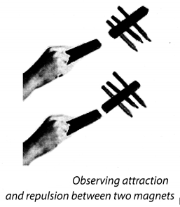
Solution:
When unlike poles of the magnet are brought near the other magnet, they attract each other and moves in the direction of another magnet. When like poles of a magnet are brought near to the other magnet, they repel each other and moves in the direction away from the other magnet.
Thus, the force exerted by a magnet on another magnet is a type of non-contact force.
Activity 7 (NCERT Textbook, Page 136)
Take a plastic straw and cut it into nearly two equal pieces. Suspend one of the pieces from the edge of a table with the help of a piece of thread (Fig. 11.5). Now hold the other piece of straw in your hand and rub its free end with a sheet of paper. Bring the rubbed end of the straw near the suspended straw. Make sure that the two pieces do not touch each other. What do you observe?
Next, rub the free end of the suspended piece of straw with a sheet of paper. Again, bring the piece of straw that was rubbed earlier with paper near the free end of the suspended straw. What do you observe now?
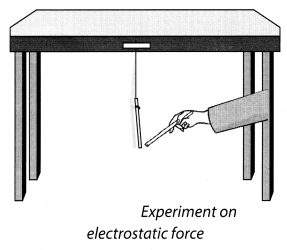
Solution:
A straw rubbed with paper attracts another straw but repels it if it has also been rubbed with a sheet of paper.The force exerted by a charged body on another charged or uncharged body is known as electrostatic force.
Activity 8 (NCERT Textbook, Page 138)
Take a transparent glass tube or a plastic pipe. The length of the pipe/tube should be about 15 cm and its diameter should be 5-7.5 cm. Also take a piece of thin sheet of a good quality rubber, say, a rubber balloon. Stretch the rubber sheet tightly over one end of the pipe. Hold the pipe at the middle, keeping it in a vertical position (Fig. 11.6). Ask one of your friends to pour some water in the pipe. Does the rubber sheet bulge out? Note also the height of the water column in the pipe. Pour some more water. Observe again the bulge in the rubber sheet and the height of the water column in the pipe. Repeat this process a few more times. Can you see any relation between the amount of the bulge in the rubber sheet and the height of the water column in the pipe?
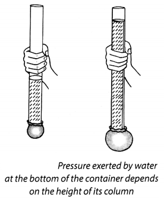
Solution:
The amount of bulge in the rubber sheet increases with the height of the water column in the pipe. Thus, the pressure exerted by water at the bottom of the container depends upon the height of its column.
Activity 9 (NCERT Textbook, Page 138)
Take a plastic bottle. You can take a discarded water or soft drink bottle. Fix a cylindrical glass tube, a few cm long near its bottom as shown in Fig. 11.7. You can do so by slightly heating one end of the glass tube and then quickly inserting it near the bottom of the bottle. Make sure that the water does not leak from the joint. If there is any leakage, seal it with molten wax. Cover the mouth of the glass tube with a thin rubber sheet as you did in Activity 11.8. Now fill the bottle upto half with water. What do you observe? Why does the rubber sheet fixed to the glass tube bulge this time? Pour some more water in the bottle. Is there any change in the bulge’of the rubber sheet?
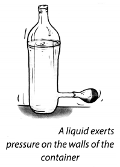
Solution:
Yes, the rubber tube bulge out and the bulging increases with the amount of water in the bottle. Thus, liquid exert pressure on the walls of the container.
Activity 10 (NCERT Textbook, Page 139)
Take an empty plastic bottle or a cylindrical container. You can take a used tin of talcum powder or a plastic bottle. Drill four holes all around near the bottom of the bottle. Make sure that the holes are at the same height from the bottom (Fig. 11.8). Now fill the bottle with water. What do you observe?
Do the different streams of water coming out of the holes fall at the same distance from the bottle? What does this indicate?
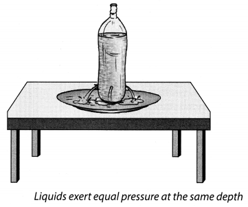
Solution:
We observed that different streams of a waterfall at the same distance from the bottle. Thus, it indicates that liquids exert equal pressure at the same depth.
Activity 11 (NCERT Textbook, page 140)
Take a good quality rubber sucker. It looks like a small rubber cup (Fig. 11.9). Press it hard on a smooth plane surface. Does it stick to the surface? Now try to pull it off the surface. Can you do it?
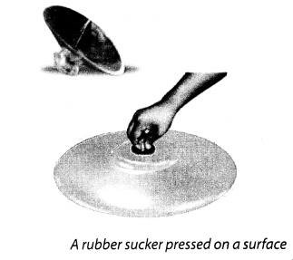
Solution:
when we press the sucker, most of the air between its cup and the surface escapes out. The sucker sticks to the surface because the pressure of the atmosphere acts on it. To pull the sucker off the surface, the applied force should be large enough to overcome the atmospheric pressure. Thus, this activity gives us an idea about the magnitude of atmospheric pressure.
NCERT Solutions for Class 8 Science Chapter 11 – 1 Mark Questions and Answers
Question 1.
When we press the bulb of a dropper with its nozzle kept in water, air in the dropper seems to escape in the form of bubbles. Once we release the pressure on the bulb, water gets filled in the dropper. The rise of water in the dropper is due to [NCERT]
- pressure of water
- gravity of the earth.
- shape of rubber bulb.
- atmospheric pressure.
Answer:
atmospheric pressure
Question 2.
An inflated balloon was pressed against a wall after it has been rubbed with a piece of synthetic cloth. It was found that the balloon sticks to the wall. What force might be responsible for the attraction between the balloon and the wall ? [NCERT]
Answer:
Electrostatic force.
Question 3.
Define force.
Answer:
Force is a push or pull on an object.
Question 4.
How many objects should be present for a force to come into play ?
Answer:
There should be atleast two objects for a force to come into play.
Question 5.
Two friends A and B are applying a force of 2 newton and 4 newton on a box in the same direction. What will be the total force applied by them ?
Answer:
The total force will be 6 newton, i.e., the sum of their individual forces.
Question 6.
In a tug of war, side A applies 10 newton force and side B applies 8 newton force. Which side will the rope move ?
Answer:
The rope will move towards side A as more force is applied by side A.
Question 7.
What happens to the speed of a body when a force is applied ?
Answer:
The speed of a body can be increased or decreased by applying force.
Question 8.
Can we change the direction of the moving object by applying a force ?
Answer:
Yes, we can change the direction of the moving object by applying a force.
Question 9.
What is meant by change in state of motion of the object ?
Answer:
Any change in the speed or direction of motion or both means a change in state of motion of the object.
Question 10.
Is it possible that a force changes the direction of motion but not the speed of an object ?
Answer:
Yes, it is possible when a body is moving on a circular path.
Question 11.
Give an example to show that force can change the shape of an object.
Answer:
Pressing a rubber ball with the hand changes its shape
Question 12.
What is meant by muscular force ?
Answer:
The force resulting due to the action of muscles is known” as the muscular force.
Question 13.
What is meant by contact force ?
Answer:
A force which is applied only when it is in contact with an object is called a contact force.
Question 14.
Does the force of friction also act on the objects moving in the air ?
Answer:
Yes, air also offers friction to objects moving in air.
Question 15.
Is it essential for the agent applying a force on an object to be in contact ?
Answer:
No, the force can also act from a distance. It is known as non-contact force.
Question 16.
Give one example of a force which can act from a distance.
Answer:
Magnetic force, i.e., the force exerted by a magnet on another magnet or a piece of iron.
Question 17.
What is meant by force of gravitation ?
Answer:
The force of attraction exerted by the earth on all objects is called the force of gravitation.
Question 18.
Is the force of gravity a contact force or non-contact force ?
Answer:
Force of gravity is a non-contact force.
Question 19.
Which force is responsible for the weight of objects ?
Answer:
The force of gravity is responsible for the weight of objects.
Question 20.
Does the force of gravitation exist between two objects on the earth ?
Answer:
Yes, the force of gravitation exists between two objects on the earth but it is very weak.
Question 21.
Do the gases and liquids exert pressure on the walls of the container ?
Answer:
Yes, liquids and gases exert pressure on the walls of the container.
Question 22.
Define atmosphere.
Answer:
The air surrounding us is known as atmosphere.
Question 23.
Name two types of contact forces.
Answer:
Muscular force and frictional force.
Question 24.
Name the force due to which planets revolve around the sun.
Answer:
Gravitational force.
NCERT Solutions for Class 8 Science Chapter 11 – 2 Mark Questions and Answers
Question 1.
Why is it comfortable to lift a school bag with broad straps than thin straps ? [NCT 2008]
Answer:
Pressure is inversely proportional to area. Since broader straps have greater area, therefore, the pressure decreases.
Question 2.
Why do mountaineers suffer from nose bleeding at high altitudes ?
Answer:
The atmospheric pressure decreases with high altitude. Since the pressure of the blood inside the body is high, the nose starts bleeding.
Question 3.
Why is easier to hammer a sharp nail into wood than a blunt one ?
Answer:
Pressure = force / area.
Therefore, when we hammer a sharp nail, force acts on a smaller area, and it exerts more pressure on the nail.
Question 4.
How would pressure change if
- area is doubled keeping force constant
- force is doubled keeping area constant ?
Answer:
- If area is doubled keeping the force constant, then pressure becomes half.
- If force is doubled keeping area constant, then pressure becomes double.
Question 5.
Why are caterpillar tracks used in battle tanks instead of tyres ?
Answer:
Caterpillar tracks are used in battle tanks instead of tyres to increase the area of contact. As a result they can even cross sinking grounds as the pressure exerted on the ground is less.
Question 6.
Give two examples each of situations in which you push or pull to change the state of motion of objects. [NCERT]
Answer:
Push — moving a loaded cart, batsman hitting a ball.
Pull — opening a drawer, drawing a bucket of water from a well.
Question 7.
Give two examples of situations in which applied force causes a change in the shape of an object. [NCERT]
Answer:
- Pressing a lump of dough with hand.
- Pressing an inflated balloon.
Question 8.
A blacksmith hammers a hot piece of iron while making a tool. How does the force due to hammering affect the piece of iron ? [NCERT]
Answer:
The piece of iron becomes flattened due to the force of hammering.
Question 9.
A camel is able to move fast on sand. Why ?
Answer:
A camel is able to move fast on sand because it has flat broad feet. This increases the area of contact and therefore, the pressure exerted by the camel on the sand reduces. Hence, the camel’s feet sink very little in the sand.
Question 10.
When does a force come into play ?
Answer:
An object’s interaction with another object results in a force between the two objects.
Question 11.
If the force is applied opposite to the motion, what will happen to the speed of the object ?
Answer:
When the force is applied opposite to the motion of the object, then either the speed decreases or the direction changes.
Question 12.
State the two factors which describe the state of motion of an object.
Answer:
The state of motion is described by its speed and direction of motion.
Question 13.
A stone is tied to a thread and moved in a circular path. Is any force required to do this ? Is there any change in speed of the stone ?
Answer:
Yes, a force is required to keep the stone moving along a circular path with a constant speed, i.e., the speed does not change.
Question 14.
How do the mud particles fly off the wheels of a vehicle moving on the wet road ?
Answer:
The direction of the mud particles change at every point as the wheels of the vehicle move.
Question 15.
Can muscular force be applied on an object without being directly in contact with it ?
Answer:
No, muscular force can be applied only when it is in contact with an object.
Question 16.
Why does a boat come to rest when we stop rowing it ?
Answer:
The boat comes to rest when we stop rowing it due to the force of friction acting between the surface of water and the boat.
Question 17.
What is meant by electrostatic force ? Is it a contact force or a non-contact force ?
Answer:
The force exerted by a charged body is known as electrostatic force. It is a non-contact force.
Question 18.
Do we feel the effect of atmospheric pressure ? Why ?
Answer:
No, we do not feel the pressure of the atmosphere because air is present everywhere. Also the pressure of air inside our body is same as that of the atmosphere.
NCERT Solutions for Class 8 Science Chapter 11 – 3 Mark Questions and Answers
Question 1.
Define Pressure. Write the relation between pressure force and area. Name the instrument used to measure atmospheric pressure. [NCT 2009]
Answer:
Pressure is force per unit area.
Pressure = Force/Area
Barometer is use to measure atmospheric pressure.
Question 2.
Why is it difficult to cut vegetables with a blunt knife ?
Answer:
Pressure is inversely proportional to area. The area of the blunt knife is more and therefore, the effect of the force is less. Therefore, more force has to be applied.
Question 3.
Trucks intended to carry heavy loads have eight tyres instead of four tyres. Why ?
Answer:
Trucks intended to carry heavy loads have eight tyres, so as to increase the area of contact with the road. Since pressure is inversely proportional to area, less pressure is applied on the road.
Question 4.
Give reasons for the following :
- The skiers use flat and broad skis
- Deep sea divers wear special suits.
Answer:
- The skiers use flat and broad skis to ski on the snow. The larger surface of skis reduces pressure on snow and helps them to slide instead of sinking.
- Deep sea divers wear special suits, because the pressure of water increases with depth. The increased pressure may hurt the body of divers.
Question 5.
How does the medicine enter a dropper ?
Answer:
When the dropper is pressed, the air inside the dropper is driven out. The pressure inside the dropper decreases and the medicine rushes inside the dropper.
Question 6.
You are given rubber sucker with a hook. Can you use it for hanging articles ? Explain how ? Give the principle involved.
Answer:
We can use it for hanging articles. On pressing the sucker, the air between the cup and the surface escapes out. The pressure inside is reduced, but the atmospheric pressure is more. Therefore, the sucker remains stuck.
Question 7.
A boy throws a ball upwards, but it comes down after sometime. Why ? Which force is acting on the ball ? What type of force is it ?
Answer:
The ball comes down to the force of gravity exerted by the earth. Force of gravity is a non-contact force and it acts on a body even though the two are not in contact with each other.
Question 8.
- Name the two contact forces.
- Why do we observe sparks coming out from a synthetic shirt when we take it off our body ?
- Which force pulls the iron nails towards a magnet ?
Answer:
- Muscular force and force of friction.
- The sparks come out from a synthetic shirt due to the electrostatic charge on it.
- Magnetic force.
NCERT Solutions for Class 8 Science Chapter 11 – 5 Mark Questions and Answers
Question 1.
Fill in the blanks in the following statements : [NCERT]
- To draw water from a well we have to ………….. at the rope.
- A charged body ……….. an uncharged body towards it.
- To move a loaded trolley we have to ……………. it.
- The north pole of a magnet …………… the north pole of another magnet.
Answer:
- pull.
- attracts
- push
- repels
Question 2.
An archer stretches her bow while taking aim at the target. She then releases the arrow, which begins to move towards the target. Based on this information fill up the gaps in the following tatements using the following terms.
muscular, contact, non-contact, gravity, friction, shape, attraction. [NCERT]
- To stretch the bow, the archer applies a force that causes a change in its ………….
- The force applied by the archer to stretch the bow is an example of ………….. force.
- The type of force responsible for a change in the state of motion of the arrow is an example of a ……………. force.
- While the arrow moves towards its target, the forces acting on it are due to and ……………… of air.
Answer:
- shape
- muscular
- contact
- gravity, friction
Question 3.
In the following situations identify the agent exerting the force and the object on which it acts. State the effect of the force in each case. [NCERT]
(a) Squeezing a piece of lemon between the fingers to extract its juice.
(b) Taking out paste from a toothpaste tube.
(c) A load suspended from a spring while its other end is on a hook fixed to a wall.
(d) An athlete making a high jump to clear the bar at a certain height.
Answer:
| Agent exerting the force | Object | Effect of force on object |
| (a) Fingers | Lemon | Lemon juice comes out. |
| (b) Fingers | Toothpaste tube | Toothpaste comes out. |
| (c) Spring | Load | Load is suspended. |
| (d) Athlete | Height of the Bar | Jumping helps to cross the bar |
Question 4.
Name the forces acting on a plastic bucket containing* water held above ground level in your hand, Discuss why the forces acting on the bucket do not bring a change in its state of motion. [NCERT]
Answer:
The forces acting on the bucket is its own weight acting downwards and the muscular force of the hand acting upwards. Since both the forces are equal and acting in opposite directions, they balance each other. So, they donot bring any change in the state of motion of bucket. The hand feels tired due to the weight of bucket.
Question 5.
- While constructing dams, the base is made more wide. Why ?
- Why does blood ooze out when there is a slight cut on your body ?
Answer:
- The pressure of liquids increases as the depth increases. Therefore, the base is made wider to withstand the high pressure of water.
- Blood pressure is little greater than atmospheric pressure. Due to this, the blood oozes out when we have a slight cut on our body.
Question 6.
- Define atmospheric pressure.
- What happens to the atmospheric pressure on mountains ?
- What makes a balloon stretch if it is filled with air ?
Answer:
- Atmospheric pressure is the pressure exerted by air.
- As we go on the mountains, the atmospheric pressure decreases.
- The air exerts pressure on the balloon and therefore, it stretches.
Question 7.
- Define one atmosphere.
- Where is the pressure greater, 10 m below the surface of sea or 20 m below ?
- Where is pressure greatest and the least inside a bottle filled with water.
Answer:
- The pressure which can support 76 cm ornercury in a mercury barometer, is called one atmosphere.
- 20 m below the surface of sea the pressure is greater.
- The pressure is greatest at the bottom and least on the surface of water filled in a bottle.
Question 8.
- What is weight ?
- What is the unit of weight ? .
- Name the device used for measuring the weight of an object.
- Can weight be taken as a measure of force ?
Answer:
- Weight of an object is the force of gravity acting on the object.
- Unit of weight is newton or kilogram weight.
- Spring balance is used for measuring the weight of an object.
- Yes, the weight can be taken as a measure of force.
Question 9.
Name the type of force in the following cases.
- Raindrops falling on the earth.
- Holding a book on your hand.
- Running a comb through your dry hair.
- A bar magnet suspended freely.
- Bullocks ploughing the field.
Answer:
- Force of gravity.
- Force of gravitation (weight).
- Electrostatic force.
- Magnetic force.
- Muscular force.
Question 10.
Using a manometer how can you show that the liquid pressure remains same at the same depth?
Answer:
Take a large glass jar full of water. Slowly lower the manometer into the water. Keep the funnel at the same depth, but pointing in different directions. You will notice that the difference in the liquid level remains the same. This proves that the pressure in a liquid remains the same in all directions at the same depth.
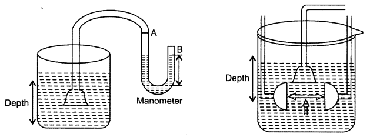
Question 11.
What happens to the atmospheric pressure if,
- the temperature is high.
- the humidity in air increases.
- metrological office; predicts fair weather
- there is a storm. .
- the weather is dry.
Answer:
- Atmospheric pressure decreases.
- Atmospheric pressure decreases.
- Atmospheric pressure increases.
- Atmospheric pressure decreases.
- Atmospheric pressure increases.
Question 12.
- Define friction.
- Is it a contact force or non-contact force?
- Why do we rub our hands in winter ?
Answer:
- Friction is the force which comes into play when one object moves on the surface of another.
- It is a contact force.
- When we rub our hands in winter heat is generated due to the force of friction. Therefore, we feel warm.
NCERT Solutions for Class 8 Science Chapter 11 MCQs
Question 1.
A batsman hits a cricket ball which then rolls on the level ground. After covering a short
distance the ball comes to rest. The ball stops due to
(a) magnetic force
(b) frictional force
(c) gravitational force
(d) muscular force
Answer:
(b)
Question 2.
When two forces applied on an object are equal and opposite, then these forces
(a) may move the object.
(b) may stop the object.
(c) may move the object and also cause a change in its shape.
(d) do not move the object but may cause a change in its shape.
Answer:
(d)
Question 3.
When two unbalanced forces act on a body, in opposite directions, the net force is equal to
(a) the sum of the individual unbalanced forces.
(b) zero.
(c) difference between the two unbalanced forces and is in the direction of the larger force.
(d) difference between the two unbalanced forces and is in the direction of smaller force.
Answer:
(c)
Question 4.
Nails have pointed ends. This results in
(a) a decrease in the force exerted on them.
(b) a decrease in the effect of the force exerted on them.
(c) an increase in the force exerted on them.
(d) an increase in the effect of the force exerted on them.
Answer:
(c)
Question 5.
Which of the following is an example of contact force ?
(a) Magnetic force
(b) Muscular force
(c) Electric force
(d) Gravitational force
Answer:
(b)
Question 6.
Fruits falling from trees is an example of
(a) gravitational force
(b) muscular force
(c) frictional force
(d) electric force
Answer:
(a)
Question 7.
The unit of measuring pressure is
(a) newton
(b) newton/metre
(c) metre2
(d) metre2/newton
Answer:
(b)
Question 8.
In liquids, the pressure
(a) increases with depth
(b) decreases with depth
(c) remains same at all depths
(d) sometimes increases sometimes decreases
Answer:
(a)
Question 9.
During dry weather, rubbing a plastic scale with dry hair, attracts small pieces of paper. This is due to
(a) gravitational force
(b) electrostatic force
(c) frictional force
(d) muscular force
Answer:
(b)